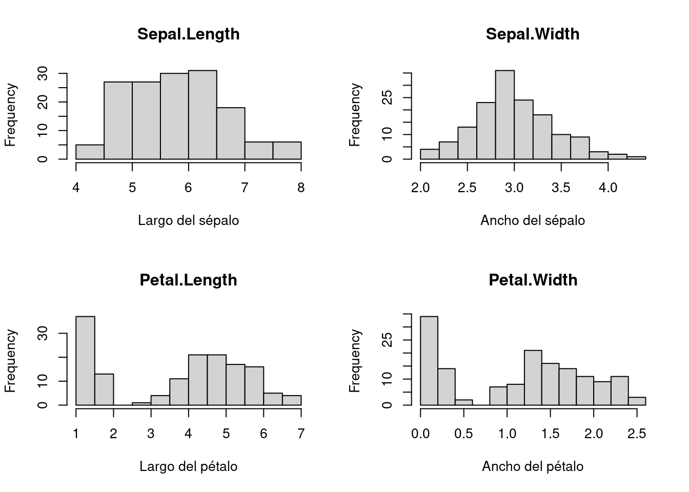
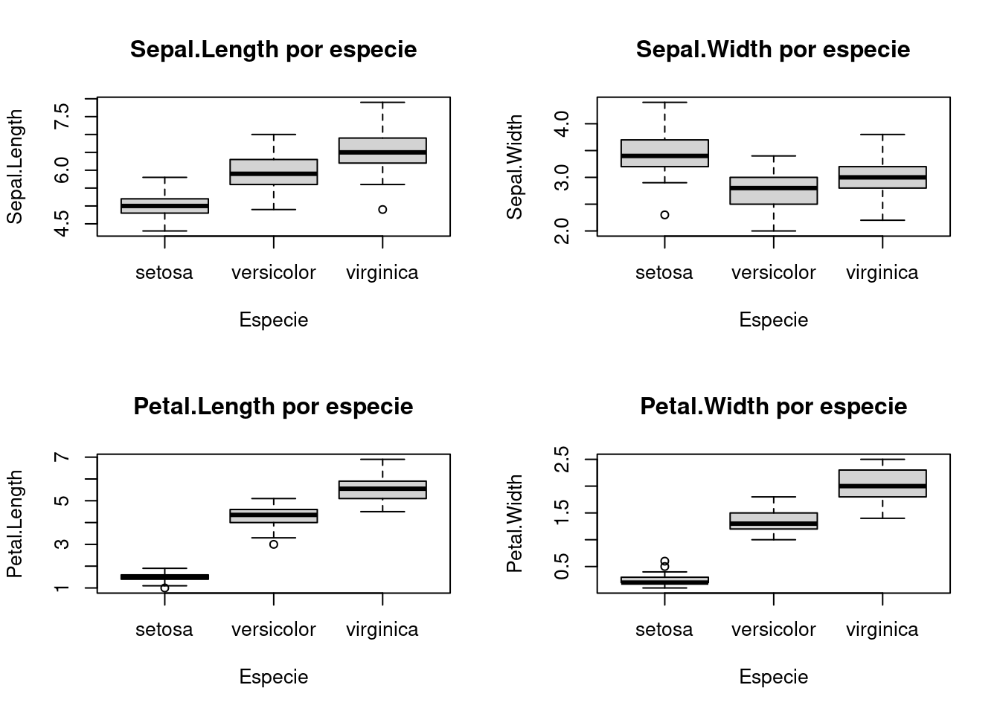
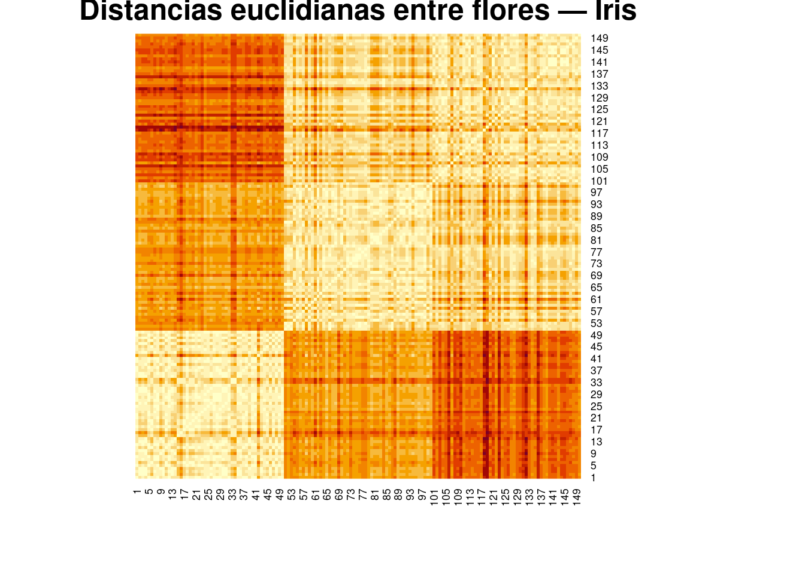
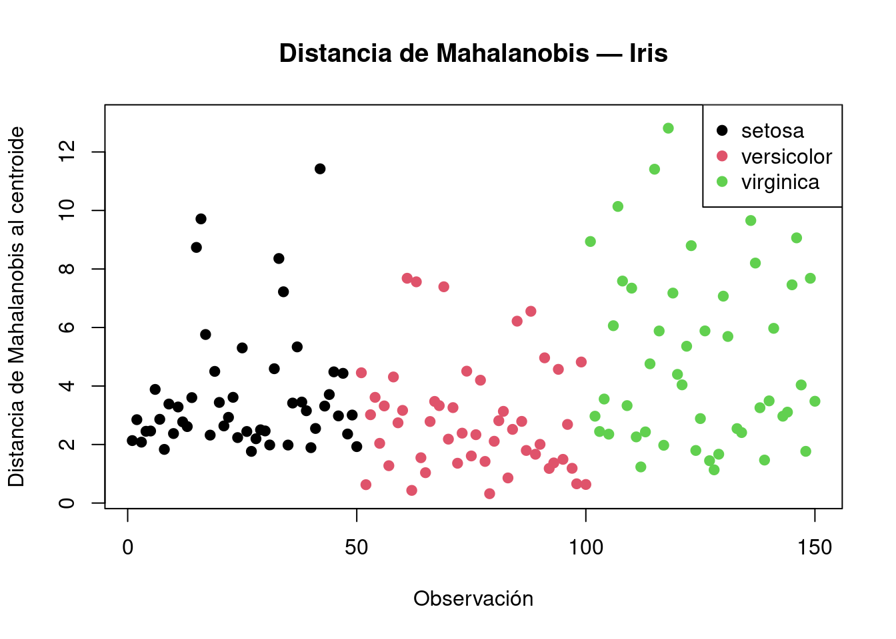
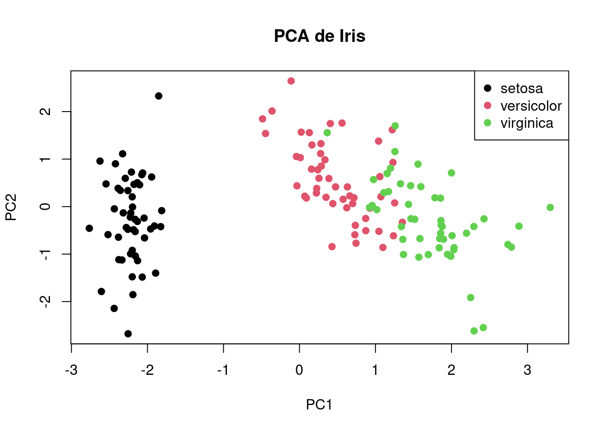
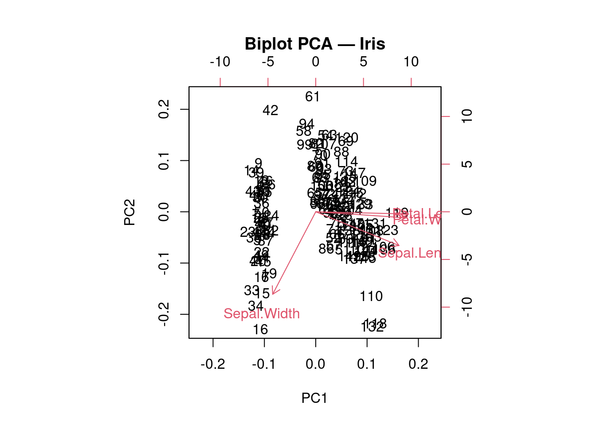
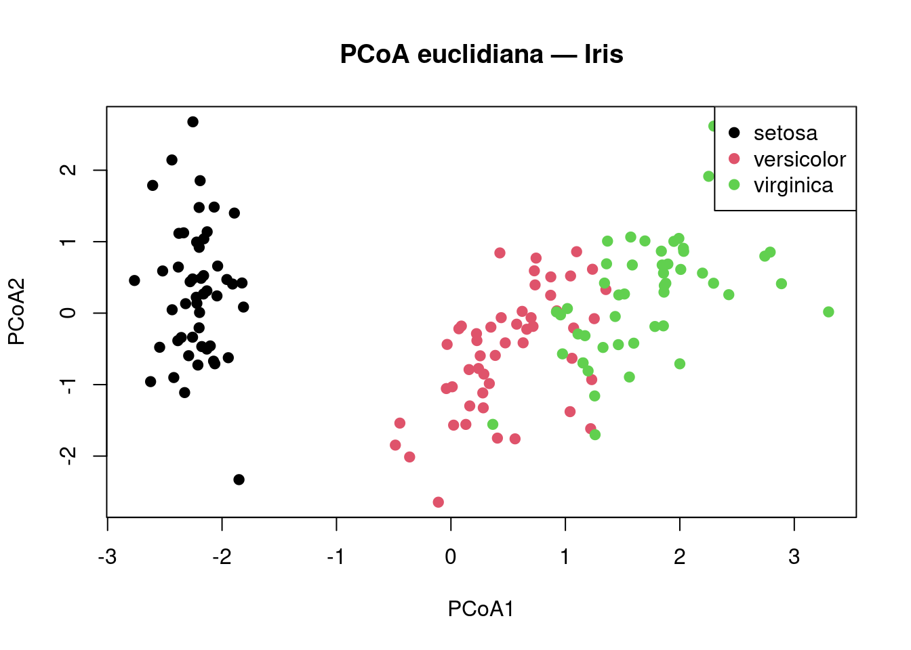
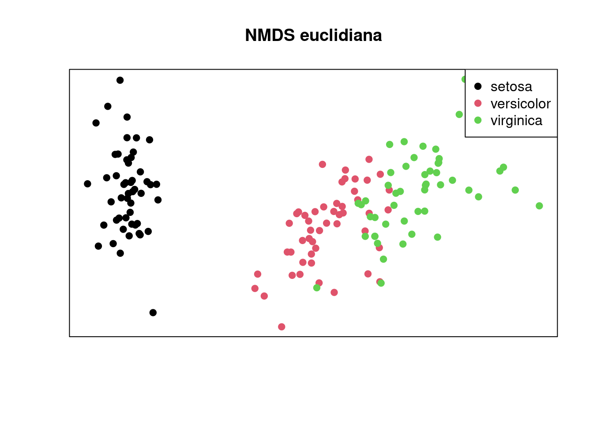
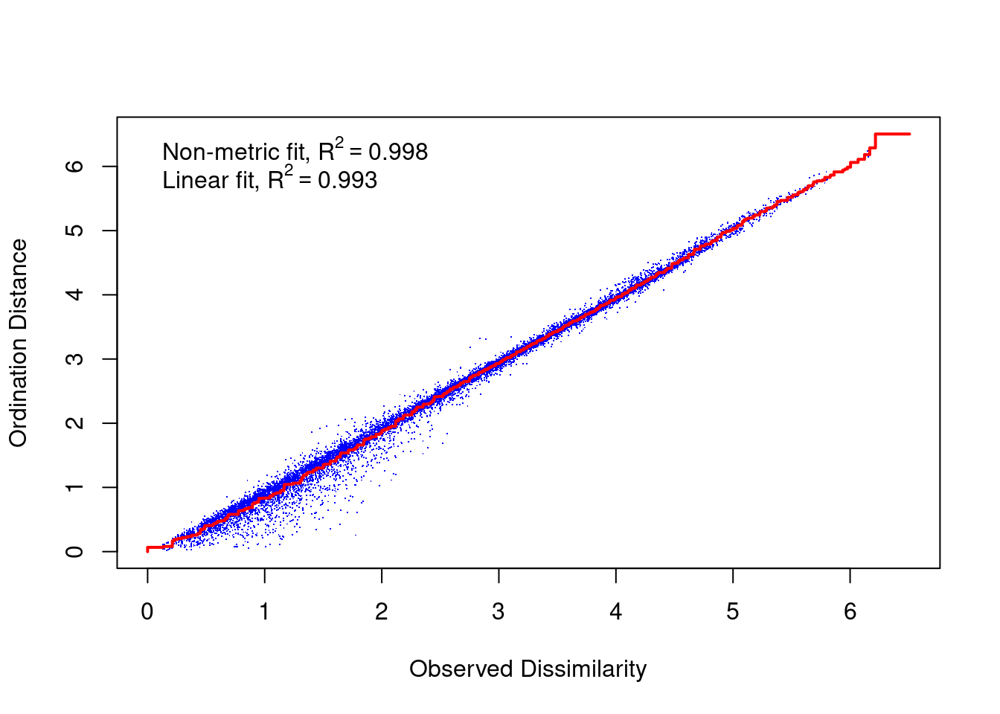

Hoja de ruta operativa 1: datos continuos con Iris
Hoja de ruta operativa: Iris
Objetivo
El análisis multivariado suele enseñarse como una sucesión de métodos: PCA, PCoA, NMDS, t-SNE, UMAP, entre otros. Sin embargo, muchas veces no se explicita que estos métodos forman parte de una estructura de decisiones que se va construyendo a medida que avanza el análisis.
Esta hoja de ruta busca ordenar los principales métodos de reducción de dimensionalidad y ordenamiento usando un dataset simple de variables continuas: iris.
La idea no es solo correr métodos, sino entender qué entrada usa cada uno, qué transformación necesita, qué estructura intenta conservar y cómo se interpreta su salida.
Analizaremos el dataset mediante una estructura de capas. Cada capa representa una pregunta distinta dentro del flujo de análisis: primero reconocemos los datos, luego decidimos si necesitamos transformarlos, después evaluamos distancias, elegimos métodos de ordenamiento, interpretamos los gráficos, validamos lo observado y finalmente tomamos una decisión analítica.
No todas las capas son obligatorias en todos los análisis. Algunas pueden estar presentes de manera explícita, como cuando calculamos una matriz de distancias antes de un PCoA o un NMDS. Otras pueden estar presentes de manera implícita, como en PCA, donde no elegimos manualmente una distancia, pero sí trabajamos dentro de una geometría euclidiana.
La estructura de capas será la siguiente:
Capa
Pregunta guía
Resultado esperado
Capa 1
¿Qué estructura inicial muestra el dataset?
Reconocer la estructura física del dataset: qué representan las filas y columnas, qué tipo de variables tenemos, si hay una variable de grupo disponible y qué relaciones iniciales aparecen entre las variables.
Capa 2
¿Necesito transformar, centrar, escalar o limpiar los datos antes de aplicar métodos multivariados?
Obtener una matriz de datos adecuada para el análisis
Capa 3
¿Cómo voy a medir el parecido o la diferencia entre las observaciones?
Definir una distancia, disimilitud o semejanza si corresponde
Capa 4
¿Qué método uso para ordenar o reducir dimensión?
Aplicar PCA, PCoA, NMDS, t-SNE o UMAP
Capa 5
¿Qué tan confiable es la representación?
Validar con varianza explicada, stress, correlación de distancias o estabilidad
Sepal.Length Sepal.Width Petal.Length Petal.Width
Min. :4.300 Min. :2.000 Min. :1.000 Min. :0.100
1st Qu.:5.100 1st Qu.:2.800 1st Qu.:1.600 1st Qu.:0.300
Median :5.800 Median :3.000 Median :4.350 Median :1.300
Mean :5.843 Mean :3.057 Mean :3.758 Mean :1.199
3rd Qu.:6.400 3rd Qu.:3.300 3rd Qu.:5.100 3rd Qu.:1.800
Max. :7.900 Max. :4.400 Max. :6.900 Max. :2.500
Species
setosa :50
versicolor:50
virginica :50
# Revision de valores faltantescolSums(is.na(iris))
Sepal.Length Sepal.Width Petal.Length Petal.Width Species
0 0 0 0 0
El dataset iris tiene 150 observaciones y 5 variables. Cada fila representa una flor. Las primeras cuatro columnas son variables numéricas continuas relacionadas con medidas de sépalos y pétalos. La quinta variable, Species, es categórica e identifica la especie.
En esta hoja de ruta, las cuatro variables numéricas serán las variables activas del análisis. La variable Species no se usará para construir los métodos de ordenamiento, sino como referencia externa para colorear los gráficos e interpretar si la estructura encontrada coincide con grupos conocidos.
1.2 Separación entre variables activas y variables de grupo
Separamos las variables numéricas en el objeto X, porque serán la matriz principal de análisis. La variable grupo conserva la especie de cada observación y será usada solo para interpretación visual.
Esta separación es importante porque evita confundir un análisis no supervisado con uno supervisado. PCA, PCoA, NMDS, t-SNE y UMAP no usarán la especie para construir la ordenación; la especie se usará después para colorear los puntos.
1.3 Exploración inicial univariada: histogramas
par(mfrow =c(2, 2))hist(X$Sepal.Length,main ="Sepal.Length",xlab ="Largo del sépalo")hist(X$Sepal.Width,main ="Sepal.Width",xlab ="Ancho del sépalo")hist(X$Petal.Length,main ="Petal.Length",xlab ="Largo del pétalo")hist(X$Petal.Width,main ="Petal.Width",xlab ="Ancho del pétalo")

par(mfrow =c(1, 1))
Los histogramas permiten observar la distribución individual de cada variable. En iris, las variables asociadas al pétalo suelen mostrar una separación más marcada entre grupos, mientras que las variables del sépalo presentan mayor solapamiento.
Esta observación todavía no constituye un método multivariado, pero anticipa que las variables de pétalo podrían tener mayor capacidad para separar especies.
1.4 Exploración visual por grupo: boxplots
par(mfrow =c(2, 2))boxplot(Sepal.Length ~ Species,data = iris,main ="Sepal.Length por especie",xlab ="Especie",ylab ="Sepal.Length")boxplot(Sepal.Width ~ Species,data = iris,main ="Sepal.Width por especie",xlab ="Especie",ylab ="Sepal.Width")boxplot(Petal.Length ~ Species,data = iris,main ="Petal.Length por especie",xlab ="Especie",ylab ="Petal.Length")boxplot(Petal.Width ~ Species,data = iris,main ="Petal.Width por especie",xlab ="Especie",ylab ="Petal.Width")

par(mfrow =c(1, 1))
Los boxplots permiten observar cómo se comporta cada variable según la especie. En este dataset, las variables relacionadas con los pétalos muestran diferencias más claras entre especies, especialmente para separar setosa de las otras dos. Las variables de sépalo muestran más solapamiento, por lo que parecen menos discriminantes de manera individual.
Esta exploración sugiere que la estructura de grupos puede estar más fuertemente asociada a las variables de pétalo.
1.5 Relación y correlación entre variables
pairs(X,col =as.numeric(grupo), pch =19,main ="Relaciones entre variables en iris")
El gráfico de pares permite observar relaciones bivariadas entre todas las variables numéricas. En varios cruces se observa una separación clara de setosa, mientras que versicolor y virginica aparecen más próximas y con cierto solapamiento.
También se observan relaciones lineales fuertes entre algunas variables, especialmente entre Petal.Length y Petal.Width. Esto anticipa que un método como PCA puede ser útil, porque PCA resume bien información cuando existen variables correlacionadas.
La matriz de correlación resume numéricamente lo que ya se observa en el gráfico de pares. Las variables de pétalo presentan una correlación alta entre sí. También hay asociación entre variables de sépalo y pétalo, aunque no todas las relaciones tienen la misma intensidad.
Este punto es importante porque PCA trabaja muy bien cuando varias variables comparten información. Si las variables estuvieran completamente desconectadas entre sí, PCA tendría menos capacidad para resumir la estructura en pocos componentes.
1.6 Concluciones de la Capa 1
En esta primera capa reconocimos que iris es un dataset de variables continuas, con una variable categórica externa que permite colorear e interpretar los resultados. La exploración inicial mostró que las variables de pétalo separan mejor las especies que las variables de sépalo, y que existen correlaciones importantes entre algunas variables.
Esto permite anticipar que los métodos de reducción dimensional podrían encontrar una estructura clara, especialmente una separación fuerte de setosa y una separación más parcial entre versicolor y virginica.
Hasta este punto no aplicamos todavía ningún método multivariado de ordenamiento. Solo construimos una lectura inicial del terreno.
CAPA 2: Transformación, escala y limpieza
Pregunta inicial de la capa
¿Necesito limpiar, transformar, centrar o escalar los datos antes de aplicar métodos multivariados?
En esta segunda capa todavía no aplicamos métodos de ordenamiento. El objetivo es revisar si la matriz de datos de la Capa 1 necesita algún tratamiento previo.
En análisis multivariado, esta etapa es importante porque muchos métodos son sensibles a la escala de las variables. Si una variable tiene una dispersión mucho mayor que otra, puede dominar el análisis aunque no sea necesariamente más importante desde el punto de vista conceptual.
En el caso de iris, las cuatro variables son continuas y están medidas en la misma unidad general, pero no tienen exactamente la misma variabilidad. Por eso vamos a comparar los datos originales con una versión estandarizada.
media desvio rango
Sepal.Length 5.84 0.83 3.6
Sepal.Width 3.06 0.44 2.4
Petal.Length 3.76 1.77 5.9
Petal.Width 1.20 0.76 2.4
Esta tabla permite observar la escala inicial de las variables. Aunque todas las variables están expresadas en medidas comparables, no tienen la misma media ni el mismo desvío estándar.
Esto es importante porque algunos métodos, como PCA o las distancias euclidianas, pueden verse influidos por la magnitud y la dispersión de las variables. Una variable con mayor varianza puede tener más peso en el resultado final, no porque sea conceptualmente más importante, sino porque numéricamente varía más.
2.2 Centrado y escalado
X_escalado <-scale(X, center =TRUE, scale =TRUE)apply(X_escalado, 2, mean)
Centrar significa restar a cada variable su media. Después de centrar, cada variable queda con media igual a 0. Escalar significa dividir cada variable por su desvío estándar. Después de escalar, cada variable queda con desvío estándar igual a 1.
Cuando hacemos ambas cosas, obtenemos variables estandarizadas:
valor estandarizado = (valor original - media) / desvío estándar
Luego de la estandarización, todas las variables tienen media aproximadamente igual a 0 y desvío estándar igual a 1. Esto permite que ninguna variable domine el análisis únicamente por tener una escala o dispersión mayor. A partir de este punto, los métodos que dependan de distancias euclidianas o de varianza trabajarán sobre una matriz más equilibrada.
2.3 Comparación visual antes y después del escalado
La comparación visual muestra que, en los datos originales, las variables tienen distintos centros y rangos. Luego del escalado, todas quedan expresadas en una escala común, con centro aproximado en 0 y dispersión comparable.
Esto no significa que las observaciones se vuelvan iguales ni que se eliminen las diferencias entre especies. Lo que cambia es la forma en que cada variable contribuye al análisis posterior.
2.4 Conclusiones de la capa 2
Para esta hoja de ruta trabajaremos principalmente con la matriz estandarizada X_escalado.
La decisión se justifica porque queremos comparar varios métodos bajo una base común. PCA, PCoA con distancia euclidiana, NMDS con distancia euclidiana, t-SNE y UMAP pueden verse afectados por la escala de las variables.
Aunque las variables de iris están medidas en unidades similares, estandarizarlas permite que cada una tenga el mismo peso inicial en el análisis. De esta forma, las diferencias entre métodos se deberán más a la lógica de cada método que a diferencias de escala entre variables.
CAPA 3: Distancia, disimilitud o semejanza
Pregunta inicial de la capa
¿Cómo medimos simiñitud o diferencia entre observaciones?
En esta capa todavía no aplicamos métodos de ordenamiento ni reducción dimensional. El objetivo es detenernos en una decisión previa: cómo medir la relación entre observaciones.
En análisis multivariado, cada observación puede pensarse como un punto ubicado en un espacio definido por varias variables. En iris, cada flor queda descripta por cuatro medidas. Por lo tanto, comparar dos flores implica comparar simultáneamente esas cuatro variables.
La distancia o disimilitud elegida define qué entendemos por “parecido” o “diferente”. Distintas medidas pueden resaltar distintos aspectos de la estructura de los datos.
3.1 Medidas según tipo de dato
No todas las distancias sirven para todos los datos. Antes de calcular una distancia, debemos mirar la naturaleza de las variables.
Tipo de dato
Medida habitual
Uso principal
Cuidado
Variables continuas
Euclidiana
Comparar observaciones en un espacio numérico
Sensible a escala y valores extremos
Variables continuas
Manhattan
Sumar diferencias absolutas entre variables
Cambia la geometría respecto de Euclidiana
Variables continuas correlacionadas
Mahalanobis
Medir alejamiento considerando covarianza
Requiere matriz de covarianza estable
Frecuencias / perfiles
Chi-cuadrado
Comparar perfiles o tablas de contingencia
No es una distancia genérica para cualquier dato
Abundancias
Bray-Curtis
Comparar composición y abundancia
No considera ausencias compartidas
Presencia / ausencia
Jaccard
Comparar presencias compartidas
Ignora coincidencias de ausencia
Presencia / ausencia
Sørensen / Dice
Comparar presencias dando más peso a coincidencias
Similar a Jaccard, pero con otra ponderación
Datos mixtos
Gower
Combinar variables numéricas, categóricas, ordinales y binarias
Depende de buena codificación previa
Para iris, las variables activas son continuas. Por lo tanto, las medidas más apropiadas para explorar esta capa son Euclidiana, Manhattan y Mahalanobis.
No utilizaremos Bray-Curtis, Jaccard, Sørensen ni Gower como medidas principales en esta hoja, porque responden mejor a otros tipos de datos. Esas medidas serán más relevantes en la hoja de ruta con dune, donde trabajaremos con abundancias y presencia/ausencia.
3.2 Distancia euclidiana
La distancia euclidiana mide la separación directa entre dos observaciones considerando todas las variables numéricas.
Mostramos solo una pequeña parte de la matriz, porque imprimir las 150 por 150 distancias completas no sería útil en el documento.
La diagonal vale cero porque una flor tiene distancia cero consigo misma. La matriz es simétrica porque la distancia de la flor A a la flor B es igual a la distancia de la flor B a la flor A.
3.3 Distancia Manhattan
La distancia Manhattan también compara observaciones numéricas, pero lo hace sumando diferencias absolutas entre variables.
Cada celda de la matriz contiene la distancia entre dos flores. La diagonal vale cero porque la distancia de una flor consigo misma es cero. La matriz es simétrica porque la distancia de la flor A a la flor B es igual a la distancia de la flor B a la flor A.
Mostramos solo una pequeña parte de la matriz porque la matriz completa tiene 150 filas y 150 columnas.
3.4 Visualización de la matriz de distancias
Una forma de explorar la matriz de distancias es mediante un mapa de calor. Este gráfico solo permite ver patrones generales de similitud o diferencia entre observaciones.
heatmap(dist_euc_mat,symm =TRUE,main ="Distancias euclidianas entre flores — Iris",Rowv =NA,Colv =NA)

Como el dataset iris está ordenado por especie, el mapa de calor puede mostrar bloques de menor o mayor distancia asociados a ese orden. Esto puede ayudar a detectar que algunas flores son más parecidas dentro de ciertos grupos.
Sin embargo, el patrón visual depende del orden de las filas y columnas. Por eso este gráfico debe interpretarse como una exploración inicial de la matriz de distancias, no como una prueba formal.
3.5 Comparación entre distancia euclidiana y Manhattan
Para datos continuos también podríamos usar distancia Manhattan. La diferencia es que Manhattan suma diferencias absolutas entre variables, mientras que Euclidiana resume las diferencias usando la lógica geométrica de la distancia directa.
No esperamos que ambas distancias sean idénticas, pero en un dataset simple y continuo como iris deberían estar bastante relacionadas.
La comparación permite evaluar si dos medidas de distancia ordenan de manera parecida las diferencias entre flores. Una correlación alta indica que los pares de flores que son cercanos según Euclidiana también tienden a ser cercanos según Manhattan.
Esto no significa que ambas distancias sean equivalentes, sino que para este dataset producen una lectura similar de la estructura general.
3.5 Distancia de Mahalanobis al centroide
La distancia de Mahalanobis permite medir qué tan lejos está cada observación respecto de un centro multivariado, considerando la estructura de covarianza entre las variables.
A diferencia de la distancia euclidiana y Manhattan calculadas entre pares de flores, aquí usaremos Mahalanobis para medir el alejamiento de cada flor respecto del centroide general del conjunto de datos.
Esto sirve para explorar dispersión multivariada y posibles observaciones atípicas.
centro <-colMeans(X_escalado)S <-cov(X_escalado)dist_maha <-mahalanobis(X_escalado, center = centro, cov = S)iris_maha <-data.frame(obsrevacion =1:nrow(iris),Species = iris$Species,dist_maha = dist_maha)# Flores mas alejadasiris_maha[order(iris_maha$dist_maha, decreasing =TRUE), ][1:10, ]
# Visualizarplot(dist_maha,pch =19,col =as.numeric(iris$Species),xlab ="Observación",ylab ="Distancia de Mahalanobis al centroide",main ="Distancia de Mahalanobis — Iris")legend("topright",legend =levels(iris$Species),col =1:3,pch =19)

Las observaciones con mayor distancia de Mahalanobis son las más alejadas del centro multivariado general. Esta distancia no mide solamente si una flor tiene valores grandes o pequeños, sino si su combinación de valores resulta poco común considerando la relación entre las variables.
Por eso Mahalanobis es útil para detectar observaciones multivariadamente alejadas.
3.6 Comparación conceptual entre las medidas usadas
Medida
Qué compara en esta hoja
Resultado que produce
Uso en esta capa
Euclidiana
Flor contra flor
Matriz de distancias entre pares
Medida principal para variables continuas estandarizadas
Manhattan
Flor contra flor
Matriz de distancias entre pares
Comparación alternativa para variables continuas
Mahalanobis
Flor contra centroide
Distancia de cada flor al centro multivariado
Medida de dispersión y posible atipicidad
Euclidiana y Manhattan responden a la pregunta: ¿qué tan diferentes son dos flores entre sí?
Mahalanobis, en este uso, responde a otra pregunta: ¿qué tan alejada está una flor del centro multivariado del conjunto de datos?
Por eso no deben interpretarse exactamente de la misma manera, aunque todas pertenezcan a la capa de distancias.
3.7 Decisión operativa de la Capa 3
Para esta hoja de ruta, la distancia euclidiana sobre X-escalado será la medida principal de diferencia entre pares de flores.
La distancia Manhattan se calculó como comparación, para observar si una medida alternativa para datos continuos produce una estructura similar.
La distancia de Mahalanobis se utilizó como medida de alejamiento respecto del centroide general, no como matriz principal entre pares de observaciones. Su función en esta hoja es explorar dispersión multivariada y posibles observaciones alejadas.
Esta capa nos permite separar tres ideas:
medir diferencia entre pares de observaciones;
comparar distintas definiciones de distancia;
medir alejamiento respecto de un centro multivariado.
3.8 Cierre de la Capa 3
En esta capa trabajamos exclusivamente sobre el problema de medir parecido, diferencia o alejamiento entre observaciones.
Primero revisamos qué medidas suelen utilizarse según el tipo de dato. Luego aplicamos al dataset iris las medidas apropiadas para variables continuas: Euclidiana, Manhattan y Mahalanobis.
La distancia euclidiana quedó como medida principal entre pares de flores. Manhattan permitió comprobar si una geometría alternativa producía una lectura similar. Mahalanobis permitió analizar la distancia de cada observación al centro multivariado, considerando la covarianza entre variables.
Recién en la próxima capa usaremos estas ideas para entrar en métodos de ordenamiento y reducción dimensional.
CAPA 4: Ordenamiento, reducción dimensional e interpretación visual
Pregunta inicial de la capa
¿Cómo puedo representar la estructura multivariada de los datos en menos dimensiones?
Hasta ahora trabajamos sobre la estructura de los datos, su escala y las formas posibles de medir distancia o diferencia entre observaciones.
Ahora buscamos representar esa estructura en un espacio más simple para poder visualizarla e interpretarla.
Reducir dimensiones significa construir una representación más compacta de la estructura de los datos. Cada método lo hace de una manera distinta y, por lo tanto, conserva aspectos diferentes de la información original.
¿Qué aporta cada método?
Antes de aplicar los métodos conviene distinguir qué ventaja ofrece cada uno. Todos pueden producir un gráfico en dos dimensiones, pero no todos responden la misma pregunta.
Método
Pregunta que responde mejor
Ventaja principal
Cuándo usarlo
Cuándo tener cuidado
PCA
¿Qué combinación de variables explica la mayor variación?
Es interpretable: permite leer observaciones y variables
Variables continuas, relaciones aproximadamente lineales, interés en reducción e interpretación
Si hay relaciones no lineales fuertes, outliers importantes o variables en escalas muy distintas sin escalar
PCoA
¿Cómo representar objetos a partir de una distancia elegida?
Permite usar distintas distancias según el tipo de dato
Cuando la distancia es una decisión central: Euclidiana, Bray-Curtis, Jaccard, Gower, etc.
Si la distancia no es euclidiana pueden aparecer autovalores negativos; requiere justificar la distancia
NMDS
¿Puedo conservar el orden relativo de las disimilitudes?
Muy flexible para datos ecológicos, abundancias y distancias no euclidianas
Cuando importan más los rangos de similitud que las distancias exactas
Es iterativo, puede cambiar entre corridas y necesita revisar el stress
t-SNE
¿Existen vecindades locales o grupos compactos?
Muy bueno para visualizar estructura local
Datos de alta dimensión, exploración visual de clusters
No interpretar distancias entre grupos ni ejes; sensible a parámetros
UMAP
¿Hay vecindades locales y cierta conectividad global?
Suele equilibrar mejor estructura local y global que t-SNE
Alta dimensión, exploración de estructura compleja, visualización de agrupamientos
No interpretar ejes como variables ni distancias como exactas; sensible a parámetros
Regla práctica de elección
PCA es la primera opción cuando tengo variables numéricas continuas y quiero una representación interpretable. Es especialmente útil si hay correlación entre variables, porque puede resumir información redundante en pocos componentes.
PCoA conviene cuando quiero partir de una distancia explícita. Su ventaja es que permite adaptar el análisis al tipo de dato: distancia euclidiana para continuas, Bray-Curtis para abundancias, Jaccard para presencia/ausencia o Gower para datos mixtos.
NMDS conviene cuando la distancia exacta es difícil de conservar, pero sí me interesa mantener el orden relativo de las similitudes. Por eso es muy usado con datos ecológicos y matrices de disimilitud no euclidianas.
t-SNE y UMAP convienen más como herramientas exploratorias de visualización, especialmente cuando hay muchas variables o estructuras no lineales. Sirven para ver vecindarios o agrupamientos, pero no para interpretar ejes ni distancias globales como si fueran mapas métricos.
Una forma simple de ordenar la decisión es:
Si quiero interpretar variables, empiezo por PCA;
Si quiero elegir explícitamente una distancia, uso PCoA o NMDS;
Si quiero conservar distancias lo mejor posible, uso PCoA;
Si quiero conservar el orden relativo de las disimilitudes, uso NMDS;
4.1.1 PCA: reducción lineal basada en varianza
Como ya habíamos estandarizado los datos en la Capa 2, aplicamos PCA directamente sobre X_escalado.
pca_iris <-prcomp(X_escalado, center =FALSE, scale. =FALSE)summary(pca_iris)
Importance of components:
PC1 PC2 PC3 PC4
Standard deviation 1.7084 0.9560 0.38309 0.14393
Proportion of Variance 0.7296 0.2285 0.03669 0.00518
Cumulative Proportion 0.7296 0.9581 0.99482 1.00000
4.1.2 Scores: ubicación de las flores en el nuevo espacio
scores_pca <- pca_iris$xplot(scores_pca[, 1], scores_pca[, 2], col =as.numeric(grupo),pch =19, xlab ="PC1", ylab ="PC2", main ="PCA de Iris")legend("topright", legend =levels(grupo), col =1:nlevels(grupo), pch =19)

En el gráfico de PCA, cada punto representa una flor proyectada sobre los dos primeros componentes principales. La especie no fue usada para construir el PCA, solo se usa para colorear los puntos.
La lectura principal es observar si la estructura encontrada por PCA coincide con los grupos conocidos. En iris, suele observarse una separación clara de setosa y una separación parcial entre versicolor y virginica.
Visualmente, PCA muestra una estructura relativamente continua. Esto es importante: el método no fuerza grupos, sino que proyecta las observaciones sobre las direcciones de mayor variación.
La separación de setosa aparece como una estructura fuerte del dataset. En cambio, versicolor y virginica quedan más próximas, lo que sugiere que su diferenciación existe, pero es menos marcada.
Como PCA permite interpretar los ejes mediante los loadings, podemos conectar la posición de las flores con las variables originales. En este caso, la separación principal está asociada sobre todo a las variables de pétalo, coherente con lo observado en la exploración inicial.
4.1.3 Loadings: relación entre variables originales y componentes
Los loadings indican cómo participa cada variable original en la construcción de los componentes principales.
Valores grandes en valor absoluto indican que una variable tiene fuerte peso en ese componente. El signo indica dirección dentro del eje, pero debe interpretarse de manera relativa: si varias variables tienen el mismo signo, se mueven juntas en ese componente; si tienen signos opuestos, se ubican en direcciones contrarias.
En PCA no interpretamos solo la posición de los puntos. También interpretamos qué variables explican la formación de los ejes.
4.1.4 Biplot: observaciones y variables en el mismo gráfico
biplot(pca_iris, main ="Biplot PCA — Iris")

El biplot combina en una misma figura las observaciones y las variables originales.
Los puntos representan flores proyectadas sobre los dos primeros componentes principales.
Las flechas representan las variables originales y muestran hacia qué dirección aumentan sus valores dentro del espacio del PCA.
En este gráfico los ejes se interpretan como componentes principales. Las flechas ayudan a entender qué variables contribuyen a la separación de las observaciones.
En iris, las variables asociadas al pétalo suelen tener un papel central en la separación entre especies. Si Petal.Length y Petal.Width apuntan en direcciones similares, eso indica que ambas variables están asociadas y contribuyen de manera parecida a la estructura del PCA.
El biplot debe leerse como una síntesis visual. Para una interpretación más ordenada conviene analizar primero los scores de las observaciones y luego los loadings de las variables.
4.2 PCoA: ordenamiento basado en distancias
PCoA parte de una matriz de distancias. En esta hoja usamos la distancia euclidiana calculada sobre X_escalado.
pcoa_iris <-cmdscale(dist_euc, k =4, eig =TRUE)scores_pcoa <- pcoa_iris$pointsplot(scores_pcoa[, 1], scores_pcoa[, 2], col =as.numeric(grupo),pch =19, xlab ="PCoA1", ylab ="PCoA2", main ="PCoA euclidiana — Iris")legend("topright", legend =levels(grupo), col =1:nlevels(grupo), pch =19)

En PCoA los ejes no son variables originales, pero sí son coordenadas principales derivadas de una matriz de distancias.
Con distancia euclidiana, PCoA suele producir una representación muy parecida a PCA. Esto ocurre porque ambos métodos están trabajando dentro de una geometría compatible.
La diferencia conceptual es importante: PCA parte de variables y varianza; PCoA parte de una matriz de distancias.
Visualmente, PCoA con distancia euclidiana produce una organización muy similar a PCA. Esto refuerza la idea de que, para datos continuos estandarizados y con distancia euclidiana, ambos métodos pueden recuperar una estructura parecida.
La utilidad de PCoA no se aprecia completamente en iris, porque estamos usando una distancia euclidiana sobre variables continuas. Su ventaja se vuelve más clara cuando necesitamos usar otras distancias, por ejemplo Bray-Curtis para abundancias, Jaccard para presencia/ausencia o Gower para datos mixtos.
PCoA permite ver cómo cambia el análisis cuando el punto de partida ya no son directamente las variables, sino una matriz de distancias entre observaciones.
4.3 NMDS: ordenamiento no métrico
NMDS también trabaja desde distancias o disimilitudes, pero no intenta conservar las distancias exactas. Intenta conservar el orden relativo de las distancias.
Es decir, si una flor A es más parecida a B que a C en el espacio original, NMDS intenta mantener esa relación de orden en el espacio reducido.
'comm' has negative data: 'autotransform', 'noshare' and 'wascores' set to FALSE
nmds_iris
Call:
metaMDS(comm = X_escalado, distance = "euclidean", k = 2, trymax = 100, autotransform = FALSE, trace = FALSE)
global Multidimensional Scaling using monoMDS
Data: X_escalado
Distance: euclidean
Dimensions: 2
Stress: 0.04212487
Stress type 1, weak ties
Best solution was repeated 14 times in 20 tries
The best solution was from try 1 (random start)
Scaling: centring, PC rotation
Species: scores missing
scores_nmds <-scores(nmds_iris)plot(scores_nmds[, 1], scores_nmds[, 2], col =as.numeric(grupo),pch =19, xlab ="", ylab ="", xaxt="n", yaxt="n", main ="NMDS euclidiana")legend("topright", legend =levels(grupo), col =1:nlevels(grupo), pch =19)

En NMDS los ejes no se interpretan como variables ni como componentes principales. Lo importante es la posición relativa de los puntos.
El valor de stress indica qué tan difícil fue representar en dos dimensiones el orden de las distancias originales.
Visualmente, NMDS debe leerse con más cautela que PCA o PCoA. La orientación del gráfico, la escala y la posición exacta de los ejes no tienen interpretación directa.
Lo importante es observar qué puntos quedan cerca y qué puntos quedan lejos en términos relativos. Si setosa aparece separada, eso indica que sus observaciones mantienen una diferencia clara respecto de las otras especies en el orden de las disimilitudes.
NMDS es especialmente útil cuando no necesitamos conservar distancias exactas, sino la estructura de semejanzas y diferencias relativas. Por eso será más importante en la hoja de ruta con dune, donde trabajaremos con abundancias y disimilitudes ecológicas.
4.4 t-SNE: visualización de vecindades locales
t-SNE es un método no lineal pensado principalmente para visualizar vecindades locales. No intenta conservar distancias globales ni producir ejes interpretables.
En datasets simples como iris, puede separar grupos visualmente, pero no necesariamente representa mejor la geometría global que PCA.
La interpretación de t-SNE debe centrarse en vecindades locales: puntos cercanos en el gráfico tienden a representar observaciones similares.
No conviene interpretar las distancias entre grupos como distancias reales del espacio original. Tampoco se interpretan los ejes t-SNE1 y t-SNE2 como variables.
Visualmente, t-SNE puede producir grupos más compactos o separados que PCA. Esto puede ser útil para detectar vecindades locales, pero también puede generar una impresión excesiva de separación.
Por eso, si dos grupos aparecen muy separados en t-SNE, no debemos concluir automáticamente que esa distancia entre grupos representa una distancia real del espacio original. La lectura correcta es más limitada: puntos cercanos dentro del gráfico tienden a ser vecinos o similares en el espacio original.
En iris, t-SNE puede ayudar a visualizar agrupamientos, pero no reemplaza a PCA cuando el objetivo es interpretar variables o explicar ejes.
4.5 UMAP: vecindades y conectividad global
UMAP también es un método no lineal de visualización. Construye una representación basada en relaciones de vecindad entre observaciones.
En comparación con t-SNE, suele intentar mantener algo más de estructura global, aunque sus ejes tampoco son interpretables como variables.
UMAP puede mostrar una separación visual clara entre grupos, pero eso no significa que las distancias del gráfico sean distancias reales del espacio original.
La lectura más prudente es observar vecindades, agrupamientos y continuidad entre grupos.
Visualmente, UMAP suele ofrecer una representación clara de vecindades y posibles agrupamientos. En comparación con t-SNE, puede conservar algo mejor ciertas relaciones globales, pero sigue siendo una visualización no lineal.
En iris, UMAP puede mostrar una separación clara entre especies, especialmente de setosa. Sin embargo, al igual que en t-SNE, no debemos interpretar los valores de los ejes ni medir distancias entre clusters como si fueran distancias reales.
4.6 Comparación visual inicial
Ahora comparamos visualmente las cinco representaciones obtenidas. Esta comparación todavía es exploratoria: observamos cómo cada método organiza las mismas flores en dos dimensiones.
En los métodos NMDS, t-SNE y UMAP las coordenadas no deben interpretarse como variables ni como magnitudes con significado propio. Por esta razón, en los gráficos de estos métodos se ocultan los valores numéricos de los ejes.
La comparación visual permite observar que todos los métodos detectan, en mayor o menor medida, la separación de setosa. Esto coincide con la exploración inicial de la Capa 1.
Las diferencias aparecen sobre todo en la forma en que cada método representa la relación entre versicolor y virginica.
PCA y PCoA tienden a conservar una estructura más continua y global.
t-SNE y UMAP pueden generar separaciones visuales más marcadas, pero no deben interpretarse como mapas métricos exactos.
NMDS se ubica en una lógica intermedia: no conserva distancias exactas, sino el orden relativo de las distancias.
Desde una lectura transversal, pueden distinguirse dos niveles de estructura:
Estructura fuerte: la separación de setosa.
Esta separación aparece en todos o casi todos los métodos, por lo que parece ser una característica robusta del dataset.
Estructura más débil o gradual: la separación entre versicolor y virginica.
Estas especies aparecen más cercanas entre sí y su separación cambia más según el método. Esto sugiere que la diferencia existe, pero no es tan fuerte como la separación de setosa.
Esta comparación permite evitar una lectura ingenua de los gráficos. Un método puede mostrar grupos visualmente más separados, pero eso no significa necesariamente que CAPA 5: Validación, contraste y explicaciónrepresente mejor la geometría original de los datos.
4.7 Cierre de la Capa 4
En esta capa aplicamos distintos métodos de ordenamiento y reducción dimensional sobre el mismo dataset. El objetivo no fue elegir automáticamente un método ganador, sino observar cómo distintos métodos construyen mapas diferentes de una misma estructura multivariada.
La comparación muestra que setosa aparece separada de manera consistente. Esta es la estructura visual más fuerte del dataset. En cambio, versicolor y virginica muestran una relación más cercana y variable, lo que indica una separación más débil o gradual.
Cada método aporta una mirada distinta:
PCA fue el método de referencia porque trabaja naturalmente con variables continuas y permite interpretar variables mediante loadings.
PCoA permitió representar las observaciones a partir de una matriz de distancias.
NMDS mostró una representación basada en el orden relativo de las distancias, sin interpretar directamente los ejes.
t-SNE resaltó vecindades locales y posibles agrupamientos.
UMAP ofreció una visualización no lineal basada en vecindades y conectividad.
Una conclusión importante de esta capa es que un gráfico más separado o visualmente más claro no necesariamente es una representación más fiel de la estructura original. La claridad visual debe contrastarse con criterios de validación.
La elección posterior del método dependerá de la pregunta analítica:
si quiero interpretar variables, PCA es el punto de partida natural;
si quiero trabajar desde una distancia explícita, PCoA o NMDS son más adecuados;
si quiero conservar distancias, PCoA es más directo;
si quiero conservar el orden relativo de las disimilitudes, NMDS es más apropiado;
si quiero explorar vecindades locales o agrupamientos complejos, t-SNE y UMAP pueden ser útiles.
La validación formal de estas representaciones quedará para la siguiente capa, donde compararemos varianza explicada, stress, correlación entre distancias originales y reducidas, y sensibilidad a parámetros.
CAPA 5: Validación, contraste y decisión analítica
Pregunta inicial de la capa
¿Qué tan confiables son las representaciones obtenidas y qué decisión analítica podemos tomar a partir de ellas?
En la Capa 4 construimos distintas representaciones bidimensionales del mismo dataset. También realizamos una primera interpretación visual. Sin embargo, una representación visualmente clara no necesariamente es una representación fiel de la estructura original.
Por eso, en esta capa buscamos contrastar lo observado visualmente con medidas de validación. La idea no es encontrar un método ganador automático, sino entender qué tan bien cada método conserva aquello que promete conservar.
5.1 PCA: varianza explicada
En PCA podemos evaluar qué tan buena es la reducción mirando cuánta varianza explican los primeros componentes.
summary(pca_iris)
Importance of components:
PC1 PC2 PC3 PC4
Standard deviation 1.7084 0.9560 0.38309 0.14393
Proportion of Variance 0.7296 0.2285 0.03669 0.00518
Cumulative Proportion 0.7296 0.9581 0.99482 1.00000
Si los dos primeros componentes explican una proporción alta de la variabilidad total, entonces el gráfico PC1 vs PC2 resume bien la estructura global de los datos.
PCA permite cuantificar cuánta información queda resumida en los primeros componentes. Esta es una ventaja importante frente a métodos como t-SNE o UMAP, donde no tenemos una medida equivalente de varianza explicada por eje.
5.2 PCoA: autovalores y representación de distancias
En PCoA también podemos mirar autovalores. Estos indican cuánta variación de la matriz de distancias queda representada en cada coordenada principal.
Como en esta hoja usamos distancia euclidiana, esperamos que PCoA tenga un comportamiento muy parecido a PCA.
Los dos primeros ejes acumulan una proporción alta, entonces el gráfico PCoA1 vs PCoA2 resume bien la estructura de distancias entre flores.
PCoA permite evaluar cuánto de la estructura de distancias queda resumida en los primeros ejes. En este caso, al usar distancia euclidiana sobre datos estandarizados, la representación debería ser muy cercana a la de PCA.
En otros datasets, especialmente con distancias no euclidianas, esta evaluación puede ser más delicada porque pueden aparecer autovalores negativos.
5.3 NMDS: stress
En NMDS, la medida principal para evaluar la calidad de la representación es el stress.
El stress indica qué tan difícil fue representar en pocas dimensiones el orden relativo de las distancias originales. Cuanto más bajo es el stress, mejor logra el NMDS representar la estructura de disimilitudes en el espacio reducido.
En NMDS no preguntamos:
¿el mapa en dos dimensiones conserva razonablemente el orden de semejanza entre las observaciones?
nmds_iris$stress
[1] 0.04212487
stressplot(nmds_iris)

Como regla práctica, podemos interpretar el stress de esta manera:
Stress
Interpretación orientativa
< 0.05
Representación excelente
0.05 - 0.10
Buena representación
0.10 - 0.20
Representación aceptable, pero con cautela
> 0.20
Representación pobre o difícil de interpretar
Estos valores no deben tomarse como reglas absolutas, pero ayudan a decidir si el gráfico NMDS es confiable como representación visual.
Si el stress es bajo o aceptable, podemos usar el gráfico NMDS como una representación razonable del orden relativo de las distancias entre flores.
Sin embargo, aunque el stress sea bueno, los ejes NMDS no se interpretan como variables. La interpretación sigue estando centrada en la proximidad relativa entre puntos y en la estructura visual general.
A diferencia de PCA, NMDS no se valida por varianza explicada. Se valida preguntando si el orden de las distancias originales fue conservado de manera aceptable en el espacio reducido.
El stressplot compara las disimilitudes originales con las distancias representadas en el espacio NMDS.
La lectura esperada es que los puntos sigan una tendencia creciente: pares de flores más disímiles en el espacio original deberían aparecer más separados en el mapa NMDS.
Si los puntos se alejan mucho de esa tendencia, significa que el mapa está distorsionando demasiado la estructura original.
5.4 t-SNE: perplexity y estabilidad visual
En t-SNE, uno de los parámetros más importantes es perplexity. Este parámetro controla, de manera aproximada, cuántos vecinos considera el algoritmo al construir la representación.
Valores bajos de perplexity hacen que t-SNE preste más atención a vecindarios pequeños. Valores más altos hacen que considere vecindarios más amplios.
Como t-SNE es sensible a este parámetro, no conviene interpretar un único gráfico como si fuera una verdad definitiva. Es mejor probar varios valores y observar si la estructura visual principal se mantiene.
Si la separación de setosa aparece con distintos valores de perplexity, esa estructura puede considerarse visualmente estable. Si la separación entre versicolor y virginica cambia más, entonces esa estructura es más dependiente del parámetro elegido.
5.5 UMAP: n_neighbors, min_dist y estabilidad visual
En UMAP, dos parámetros importantes son n_neighbors y min_dist.
n_neighbors controla cuántos vecinos usa el algoritmo para construir la estructura local. Valores bajos priorizan vecindarios pequeños; valores altos incorporan una estructura más amplia.
min_dist controla qué tan cerca pueden quedar los puntos en la representación final. Valores bajos producen grupos más compactos; valores altos generan representaciones más abiertas o dispersas.
Si una estructura visual aparece de manera parecida al cambiar los parámetros, tenemos más confianza exploratoria en ella. Si cambia mucho, debemos interpretarla con cautela.
En iris, esperamos que setosa se mantenga claramente separada. En cambio, la relación entre versicolor y virginica puede variar más según los parámetros, porque su separación es menos fuerte.
5.6 Comparación global de distancias
Una forma de contrastar las representaciones es comparar las distancias originales entre flores con las distancias obtenidas en cada espacio reducido.
Para esto calculamos la correlación de Spearman entre:
las distancias originales sobre X_escalado;
las distancias en el espacio reducido de cada método.
La correlación de Spearman no compara los valores exactos de distancia, sino el orden relativo. Por eso resulta útil para evaluar si los pares de flores que estaban cerca o lejos en el espacio original conservan una relación parecida en el mapa reducido.
Esta comparación no debe interpretarse como una competencia absoluta entre métodos, porque no todos intentan conservar lo mismo.
Sin embargo, sirve para mostrar una diferencia importante: algunos métodos pueden producir gráficos visualmente atractivos pero conservar peor el orden global de las distancias originales.
En un dataset simple y continuo como iris, es esperable que PCA y PCoA con distancia euclidiana tengan muy buen desempeño en esta comparación. Métodos como t-SNE y UMAP pueden mostrar agrupamientos claros, pero no necesariamente conservar mejor la geometría global.
5.7 Decisión analítica final
Luego de comparar visual y numéricamente los métodos, para este dataset el PCA aparece como el método principal de referencia.
La decisión se justifica porque iris contiene variables continuas, previamente estandarizadas, con relaciones lineales importantes entre algunas variables. Además, PCA permite interpretar tanto la posición de las observaciones como la contribución de las variables originales mediante los loadings.
PCoA con distancia euclidiana produce una representación muy similar, por lo que funciona como una comparación útil y como puente hacia métodos basados en distancias. NMDS, t-SNE y UMAP aportan visualizaciones alternativas, pero en este dataset simple no ofrecen una ventaja clara frente a PCA.
Por lo tanto, para iris, usaríamos PCA como método principal de interpretación, PCoA como contraste basado en distancias, y NMDS, t-SNE y UMAP como herramientas exploratorias complementarias.
5.8 Cierre de la hoja de ruta
Esta hoja de ruta permitió recorrer un análisis multivariado completo sin comenzar directamente por los métodos.
Primero reconocimos la estructura física de los datos. Luego revisamos escala y preparación. Después analizamos cómo medir distancias entre observaciones. Recién entonces aplicamos métodos de ordenamiento y reducción dimensional. Finalmente, contrastamos las representaciones visuales con medidas de validación.
La idea central es que los métodos no se eligen por costumbre ni porque produzcan gráficos atractivos. Se eligen según el tipo de dato, la distancia relevante, la estructura que queremos conservar y el objetivo analítico.